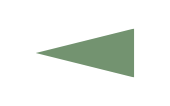

A new study demonstrates that honey bees can evaluate the reliability of their own communication, actively adjusting the vigour of their "waggle dance" based on the truthfulness of the information they provide. By manipulating whether a dancing bee's followers successfully found food, experiments revealed that only bees with verified, "honest" information increased their recruitment effort over time when advertising a new location, whereas "liar" or "unverified" bees did not. This internal self-control mechanism naturally filters out ambiguous or misleading signals, allowing the hive to function efficiently as a cooperative superorganism.
A new study by Dr Karmi Oxman and Prof. Sharoni Shafir from the Hebrew University of Jerusalem and Prof. Ofer Feinderman from the Weizmann Institute of Science has revealed that honey bees have a remarkable ability to assess the reliability of the information they communicate to their hive. The research demonstrates that bees will actively increase their recruitment efforts when they know the directions they are providing to food sources are accurate and verified.
The famous "waggle dance" is the primary method honey bees use to share the location of profitable food sources with their nestmates, utilising vibration pulses to indicate distance and direction. However, the precision of these dances can vary from bee to bee, prompting researchers to ask how a colony manages the spread of information when the quality of that information differs.
To find out, the research team conducted an experiment at the Benjamin Triwaks Bee Research Center in Rehovot. They set up a system to manipulate the quality of information that specific "focal" bees communicated to their followers.
The scientists established three distinct scenarios for the recruits who followed the dances of the focal bees. In the "honest" treatment, the follower bees flew to the advertised location and successfully fed on sugar solution. In the "liar" treatment, the dancer had access to food, but the followers were met with an entirely empty feeder. Finally, an "unverified" treatment eliminated all feedback by having researchers safely capture the follower bees as soon as they arrived at the location, preventing them from returning to the hive. Read the article in full here.